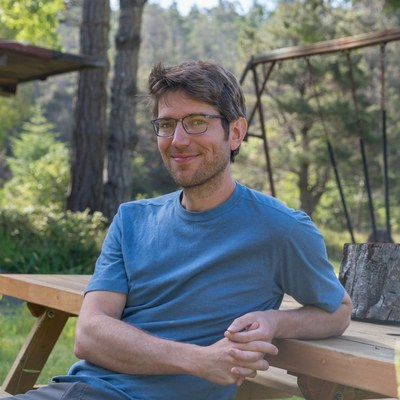
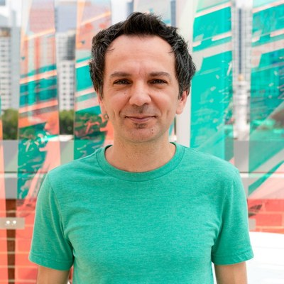
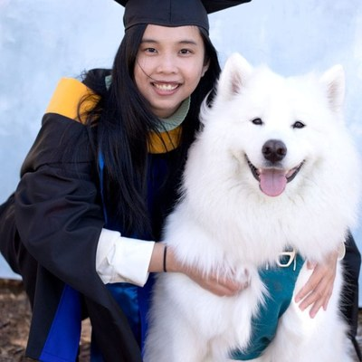
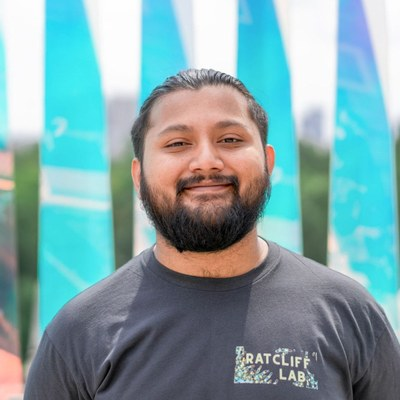
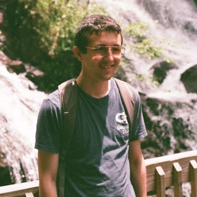
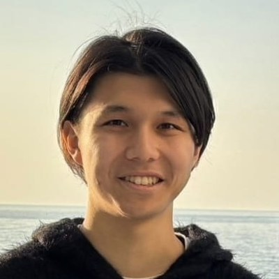
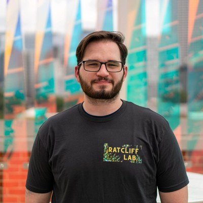

Team
Team
The MuLTEE has run since 2018, and it requires a transfer every single day.
The experiment is maintained by a small permanent core, a rotating group of graduate and
undergraduate researchers, and collaborators on three continents.
The roles below are
based on authorship of the papers that use MuLTEE populations. Full author lists are on the
Publications page.
Leads and contacts
Who to write to

William C. Ratcliff
Professor, School of Biological Sciences, Georgia Tech
Co-founder of the MuLTEE. He developed the snowflake yeast system from around 2010 as a
postdoc in Michael Travisano's lab at the University of Minnesota, where daily settling
selection was first used to evolve multicellularity de novo, and moved to Georgia Tech in
2014. Senior author of the 2023 Nature macroscopic-size paper and co-PI on the
NSF LTREB award that funds the experiment.
ratcliff@gatech.edu

G. Ozan Bozdag
Senior Research Scientist, Georgia Tech
Co-founder of the MuLTEE, and the person who runs it day to day. He proposed and
designed the metabolic treatment scheme that removed the oxygen limit on cluster size,
founded the fifteen populations in 2018, and continued transferring them past the end of
the original experiment, which is what made the MuLTEE a long-term experiment. First
author of both the 2021 oxygen paper and the 2023 Nature macroscopic-size paper,
and PI on NSF award 2452109, the LTREB grant behind the 2025–2035 decadal plan.
Strain requests · scientific scoping
gonensin.bozdag@biology.gatech.edu

Dung T. Lac
Research Scientist, Georgia Tech
Joined the lab in 2021. She manages strain distribution and leads omics data
collection, and is studying the role of Hsp90 in macroscopic adaptation through a replay
evolution experiment. Co-author on the 2023 macroscopic-size, 2024 coexistence, 2024
Hsp90 and 2025 genome-duplication papers.
Strain requests · logistics and shipping
dlac3@gatech.edu
Strain requests reach both: Dung Lac handles the paperwork and
shipping, Ozan Bozdag scopes the science of the request. Start on the
Data & Strains page.
Current contributors
Working on MuLTEE populations now
Anthony J. Burnetti
Research Scientist, Georgia Tech
Co-author on the 2023 macroscopic-size paper, the 2024 Hsp90 paper and the 2024
entanglement paper. His own line of work is the mechanisms life uses to overcome oxygen
limitation on multicellular size, including phototrophy and oxygen-binding globins. PhD
at Duke on the yeast metabolic and cell division cycles.

Sayantan Datta
PhD student, QBioS
Co-author on the 2025 genome-duplication paper and on the 2025 super-resolution
imaging paper that phenotyped evolved and ancestral anaerobic strains. He works on the
life history of nascent multicellular yeast and the evolution of cell differentiation.
BS-MS from IISER Pune.

Luis Felipe Cedeño-Pérez
PhD student, QBioS
First author of the 2025 paper on coordinated cell division, which showed that the
anaerobic lines lost the ancestral first-division delay by day 200 and stayed
synchronous through day 1,000. He began on evolved trade-offs in snowflake yeast during
a year-long internship before the PhD. Genomic Sciences, UNAM.

Hikaru Katani
PhD student, Biology, Georgia Tech
Working with Dung Lac and Ozan Bozdag on emergent gene expression patterns in
S. cerevisiae under anaerobic, mixotrophic and aerobic regimes.

Liam Adamson
Bachelor's and Master's student, Georgia Tech
The lab is larger than this list. Named here are the members whose
MuLTEE contributions are evidenced by authorship; the full roster is on the
Ratcliff Lab people page.
Alumni credits
Former members who built the experiment
An experiment that
runs for decades outlasts most of the people who work on it. Much of the work described on
this site was done by researchers who have since moved on, and the credit is theirs. The
contributions below are taken from the author lists of the papers that use MuLTEE
populations.
-
Kai Tong
First author of the 2025 Nature genome-duplication paper;
co-author on the 2023 macroscopic-size and 2024 Hsp90 papers. Now a postdoc at
Harvard.
-
Thomas C. Day
First author of the 2024 Physical Review X entanglement
paper; co-author on the 2023 macroscopic-size, 2024 coexistence, 2025
genome-duplication and 2025 cell-division papers. Now a postdoc at USC.
-
Rozenn M. Pineau
First author of the 2024 Nature Ecology & Evolution
coexistence paper, and a co-author on the 2025 cell-division paper. Now a postdoc at
Utah State.
-
Peter L. Conlin
Postdoc in the lab; senior author of the 2025 cell-division paper and
co-author on the 2023 macroscopic-size, 2024 entanglement and 2025 genome-duplication
papers. Now a research scientist in the Rosenzweig lab at Georgia Tech.
-
Seyed Alireza Zamani-Dahaj
Second author on both the 2023 macroscopic-size paper and the 2024
entanglement paper, the two results that established how evolved clusters hold
together.
-
Emma P. Bingham
Co-author on the 2024 entanglement paper and on the study of
metabolically driven flows in millimetre-scale clusters.
-
Penelope C. Kahn
Research technician on the experiment and a co-author of the 2023
Nature macroscopic-size paper.
-
Vivian Cheng, Daniella J. Haas and Saranya Gourisetti
Undergraduate and Master's researchers, co-authors of the 2025
genome-duplication paper.
This is the MuLTEE subset of a much longer alumni list. The lab's
pre-2018 snowflake yeast work, which built the model system these populations were founded
from, carries its own set of names; those papers are grouped as foundational on the
Publications page.
Collaborators
Collaborating groups
Recurring
co-authors outside the lab, each listed with the MuLTEE work they appear on.
-
Peter J. Yunker
School of Physics, Georgia Tech. Co-author on the 2023
macroscopic-size, 2024 entanglement, 2024 coexistence and metabolically-driven-flow
papers, and PI or co-PI with Ratcliff on the grants that fund the biophysics.
-
Juha Saarikangas
HiLIFE and Faculty of Biological and Environmental Sciences,
University of Helsinki. Senior author of the 2024 Science Advances paper on
proteostatic tuning, which found the Hsp90 mechanism behind cell elongation.
-
Kristopher Montrose
University of Helsinki. First author of that same proteostatic tuning
paper.
-
Shashi Thutupalli
Simons Centre for the Study of Living Machines, National Centre for
Biological Sciences (TIFR), Bangalore. Senior author of the work showing that
metabolism drives circulatory flows through millimetre-scale clusters.
-
Eric Libby
Department of Mathematics and Mathematical Statistics, Umeå
University. Co-author of the 2024 coexistence paper and of the 2021 oxygen experiment
whose result set the MuLTEE's three metabolic treatments.